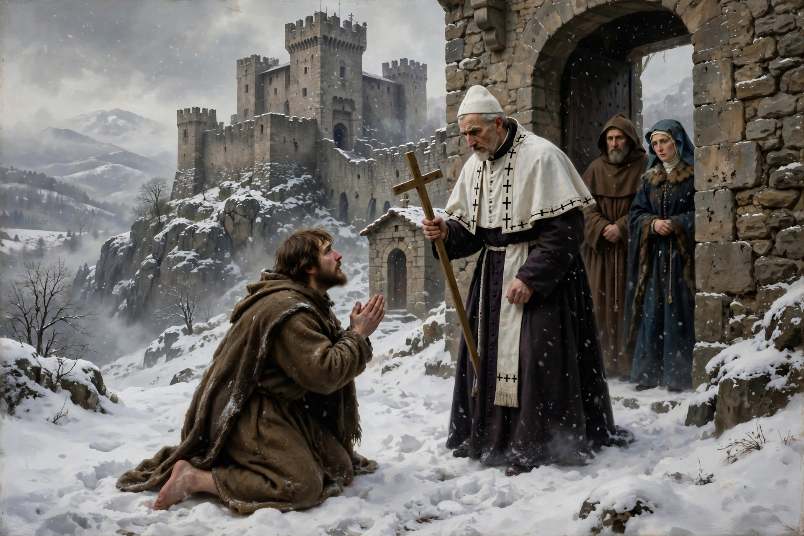

From Wikipedia, the free encyclopedia
| Walk to Canossa | |
|---|---|
 | |
| Date | January 1077 |
| Location | Canossa Castle, Emilia, Italy |
| Participants | Henry IV, Holy Roman Emperor; Pope Gregory VII |
| Context | Investiture Controversy |
The Walk to Canossa (German: Gang nach Canossa; Italian: l'umiliazione di Canossa, "the humiliation at Canossa") was the journey of the Holy Roman Emperor Henry IV to Canossa Castle in northern Italy in January 1077, where Pope Gregory VII had taken refuge, to beg revocation of his excommunication during the Investiture Controversy.
Gregory VII's reforms asserted papal supremacy and forbade lay investiture of bishops. When Henry continued appointing bishops and denounced the pope, Gregory excommunicated and deposed him in 1076, releasing his subjects from their oaths. German princes gave Henry a deadline to obtain absolution or lose his throne.
Henry crossed the Alps in winter via Mont Cenis and reached Canossa, where Gregory was staying with Matilda of Tuscany. According to tradition, the emperor stood for three days — 25 to 27 January 1077 — barefoot in the snow outside the castle gate, dressed as a penitent, before Gregory admitted him, celebrated Mass with him and lifted the excommunication on 28 January.
The absolution split Henry's opponents and saved his crown, though conflict resumed and Henry was excommunicated again in 1080 and later drove Gregory from Rome. "Going to Canossa" entered European languages as a phrase for a humiliating submission or act of penance; Chancellor Otto von Bismarck famously declared during the Kulturkampf in 1872, "We will not go to Canossa."